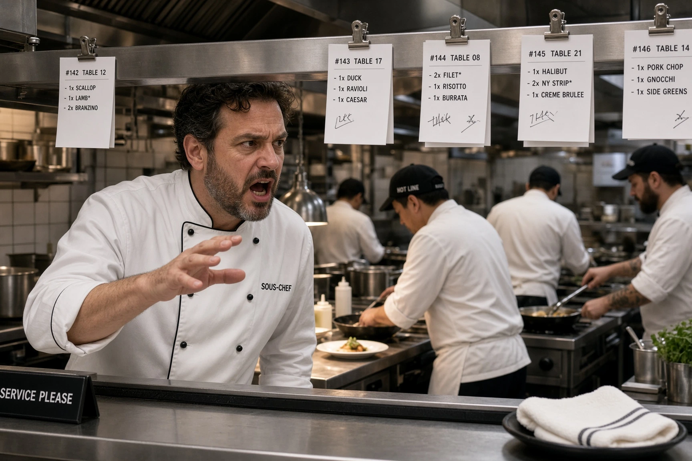
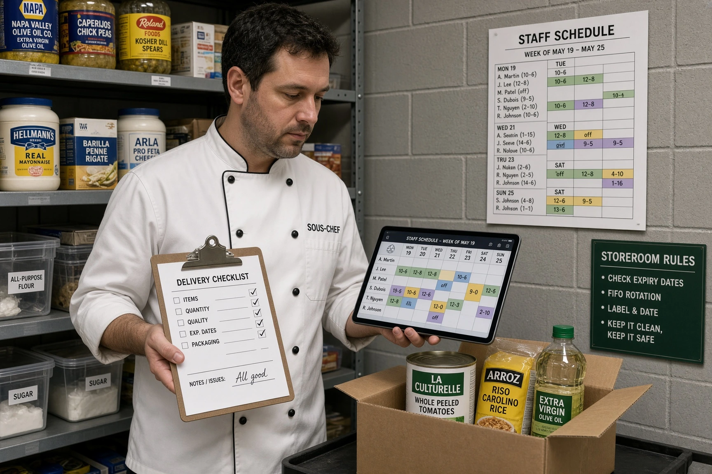

Salaire d'un second de cuisine (sous-chef) en 2026 : brut, net et grille HCR
Le second de cuisine, ou sous-chef, est le bras droit du chef : il organise la brigade, remplace le chef en son absence et tient souvent les commandes, le planning et le suivi HACCP. Il est classé au niveau IV de la grille HCR (agent de maîtrise), avec un minimum compris entre 2 508 € et 2 682 € brut par mois en 39h depuis le 1er novembre 2026. Voici le détail, le net et ce que paie réellement le marché.

Combien gagne un second de cuisine en 2026 ?
Le second de cuisine est généralement classé au niveau IV de la grille HCR, celui des agents de maîtrise. Certains éditeurs de paie le situent dès le III/3 dans les petites brigades, lorsque ses responsabilités d'encadrement restent limitées.
| Niveau / échelon | Taux horaire brut | Brut mensuel 35h | Brut mensuel 39h | Net estimé 39h |
|---|---|---|---|---|
| III/3 | 14,28 € | 2 166 € | 2 438 € | ≈ 1 877 € |
| IV/1 | 14,69 € | 2 228 € | 2 508 € | ≈ 1 931 € |
| IV/2 | 15,07 € | 2 286 € | 2 573 € | ≈ 1 981 € |
| IV/3 | 15,71 € | 2 383 € | 2 682 € | ≈ 2 065 € |
Minima conventionnels de l'avenant n°36 à la convention collective HCR (IDCC 1979), applicable depuis le 1er novembre 2026. Base 35h = 151,67 h × taux ; base 39h = 151,67 h × taux + 17,33 h × taux × 1,10 (heures 36 à 39 majorées de 10 %). Net estimé = brut × 0,77, à titre indicatif. Hors avantage en nature repas, primes et heures au-delà de 39h.
Statut agent de maîtrise : ce que ça change
Le niveau IV correspond au statut d'agent de maîtrise. Concrètement, il reconnaît des responsabilités d'encadrement et d'organisation :
- Encadrement de la brigade : répartition des tâches, formation des commis et des chefs de partie.
- Remplacement du chef pendant ses absences et ses jours de repos.
- Gestion : commandes, réception des marchandises, suivi des stocks, planning, application du Plan de Maîtrise Sanitaire.
Le préavis et la période d'essai d'un agent de maîtrise sont plus longs que ceux d'un employé : voir le détail dans la convention collective HCR.

Le salaire réel d'un second de cuisine
Les minima conventionnels (2 508 € à 2 682 € brut en 39h) sont rarement le salaire réel d'un second de cuisine expérimenté. D'après les données de marché publiées en 2026 :
| Source (donnée de marché) | Salaire brut mensuel |
|---|---|
| Fourchette générale (fiche-paie.fr, 2026) | 2 200 € (débutant) à 3 800 € (palace, étoilé), médiane ≈ 2 700 € |
| Offre France Travail — restaurant étoilé, Nanterre | 3 182 € |
| Offre France Travail — Mougins | 2 900 à 3 300 € |
| Offre France Travail — Cannes | 4 100 à 4 500 € |
Données de marché indicatives (annonces et estimations publiées), non représentatives de l'ensemble du secteur. Elles montrent surtout l'écart entre le minimum conventionnel et les salaires proposés dans les établissements haut de gamme ou les zones touristiques.
Ce qui s'ajoute au salaire de base
- Heures supplémentaires : en HCR, les heures de la 36e à la 39e sont majorées de 10 %, de la 40e à la 43e de 20 %, et au-delà de 50 %.
- Avantage en nature repas : chaque repas pris sur place est évalué à 4,35 € (minimum garanti). Il s'ajoute au salaire et ne peut pas servir à atteindre le minimum conventionnel. Détail dans notre guide de l'avantage en nature repas.
- Travail de nuit, dimanches et jours fériés : contreparties prévues par la convention, voir la convention collective HCR.
Notre modèle de planning gratuit, compatible convention HCR, vous aide à maîtriser les heures et la masse salariale de votre brigade.
Accéder au planning →Évolution : de second à chef de cuisine
Le second de cuisine vient généralement du poste de chef de partie. Son évolution naturelle est le poste de chef de cuisine, classé au niveau IV ou V (cadre) selon l'établissement, avec un minimum de 3 210 € brut en 39h au niveau V/1.
Voir le salaire d’un chef de cuisine et la progression complète dans notre grille des salaires cuisiniers.
Questions fréquentes : salaire second de cuisine
Combien gagne un second de cuisine en 2026 ?
Au minimum conventionnel (avenant n°36, 1er novembre 2026), un second de cuisine classé au niveau IV gagne entre 2 508 € et 2 682 € brut par mois en 39h, soit environ 1 931 € à 2 065 € net. Les données de marché publiées en 2026 situent la médiane autour de 2 700 € brut, et jusqu'à 3 800 € et plus en palace ou en restaurant étoilé.
Second de cuisine et sous-chef, c'est la même chose ?
Oui, les deux termes désignent le même poste : l'adjoint direct du chef de cuisine, qui organise la brigade et le remplace en son absence.
Un second de cuisine est-il cadre ?
En général non : il est classé au niveau IV de la grille HCR, avec le statut d'agent de maîtrise. Le statut cadre correspond au niveau V.
Quelle différence de salaire entre chef de partie et second ?
Au minimum conventionnel en 39h, un chef de partie en III/3 touche 2 438 € brut, contre 2 508 € pour un second en IV/1. Sur le marché, l'écart est plus marqué car le second porte la responsabilité de la brigade.
Comment devenir second de cuisine ?
Le plus souvent après plusieurs années comme chef de partie, en montrant des compétences d'organisation et d'encadrement. Un BP arts de la cuisine ou un BTS management en hôtellerie-restauration peut accélérer la progression.